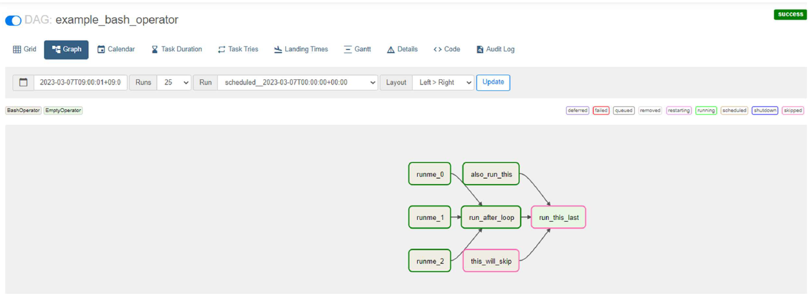
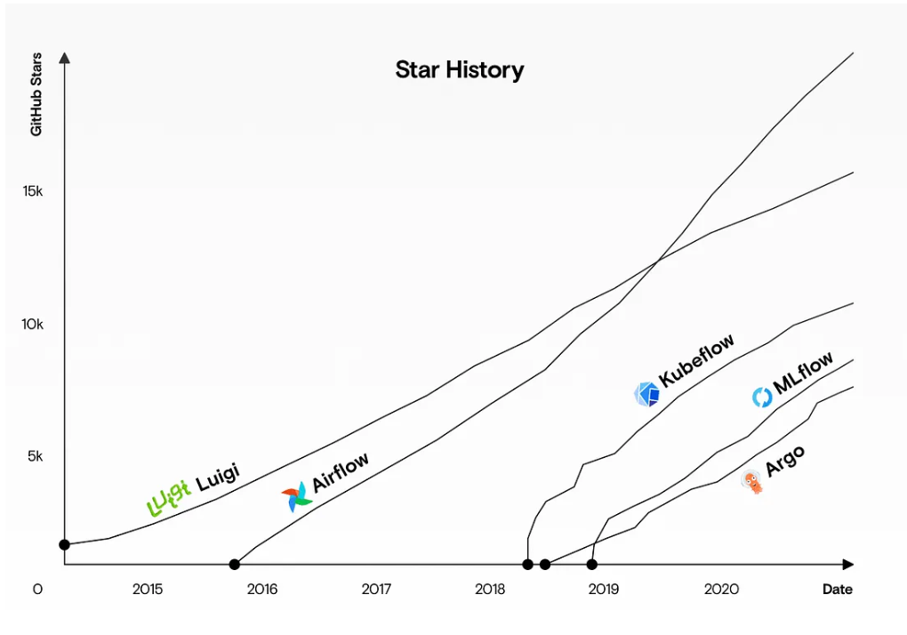
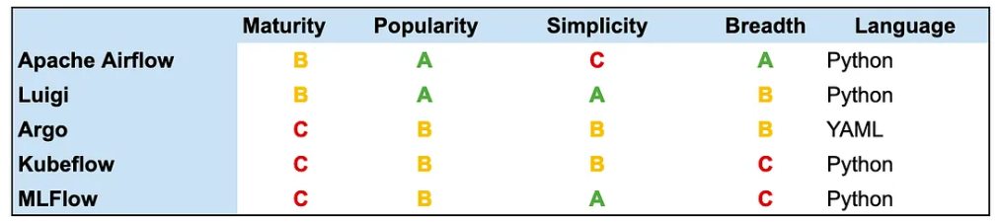

Airflow Introduction
Template
Engineering
template
Author
Kwangmin Kim
Published
May 1, 2023
- 파이썬을 이용해 워크플로우를 만들고 관리할 수 있는 오픈소스 기반 워크플로우 관리 도구
- 2014년 에어비앤비에서 만든 워크플로우 관리 솔루션
- Airflow는 워크플로우를 DAG을 사용하여 정의하고, 관리하는 프로그램
- 자유도가 크고, 확장성이 좋은 워크플로우 관리 프로그램
- 파이썬으로 제작된 도구이며 이용자가 워크플로우 생성시에도 파이썬으로 구현해야 함
- 하나의 워크플로우는 DAG(Directed Acyclic Graph) 이라 부르며 DAG 안에는 1개 이상의 Task가 존재
- Task간 선후행 연결이 가능하되 순환되지 않고 방향성을 가짐(=DAG)
- Cron 기반의 스케줄링
- 모니터링 및 실패 작업에 대한 재실행 기능이 간편
- 파이썬에 익숙하다면 러닝 커브 빠르게 극복 가능
- 대규모 워크플로우 환경에서 부하 증가시 수평적 확장 가능한 Kubenetes 등 아키텍처 지원
- 파이썬에서 지원되는 라이브러리 활용하여 다양한 도구 컨트롤 가능 (GCP, AWS등 대다수 클라우드에서 제공하는 서비스)
- GCP: Google Cloud Platform
- AWS: Amazon Web Services
- Airflow에서 제공하는 파이썬 소스 기반으로 원하는 작업을 위한 커스터마이징이 가능 (오퍼레이터, Hook, 센서 등)
- 실시간 워크플로우 관리에 적합치 않음 (최소 분 단위 실행)
- 워크플로우(DAG) 개수가 많아질 경우 모니터링이 쉽지 않음
- 워크플로우를 GUI환경에서 만들지 않기에 파이썬에 익숙하지 않다면 다루기 쉽지 않음 협업 환경에서 프로그래밍 표준이 없으면 유지관리가 쉽지 않음
1 Introduction
1.1 Characteristics
1.1.1 Example

In Figure 2, 초록색 테두리의 node는 성공한 task를 의미하고 분홍색 테두리의 node는 실패한 task를 의미한다. 위의 그림에는 없지만 회색 테두리는 queue (준비) 상태를 의미한다. Airflow에는 DAG이 일련의 task로 구성되어 있기 때문에 실행 상태도 성공, 실패 및 준비 상태같은 여러 종류가 있다. 나머지 상태는 뒷 부분에서 차차 다뤄보기로 한다.
1.2 Motivation
1.2.1 Why to Learn Airflow?


Figure 3 을 보면, Figure 3 (a) 에서 볼수 있듯이 최근 들어 airflow의 인기가 급증하는 것을 볼 수 있다. Figure 3 (b) 에서 그 이유를 짐작할 수 있는데 airflow가 simplicity가 C 사용하기는 어렵지만 구현할 수 있는 폭 breadth가 높다 (Breadth: A). 즉, 다른 workflows에 비해 복잡한 코딩을 요구하는 만큼 그 자유도가 높다는 것을 짐작할 수 있다.